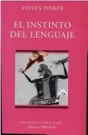

El instinto del lenguajeSteven Pinker

El instinto del lenguaje
Steven Pinker
Defiende que el lenguaje es una capacidad innata del ser humano y explica cómo lo adquieren los niños.
- Publicado originalmente
- 1994
- Enfoque
- Divulgación científica
- Para quién
- Lectores con interés en la ciencia
- Ficha bibliográfica
- Open Library
Este libro tiene derechos de autor, así que no lo alojamos. Te dejamos la ficha para que sepas de qué trata y lo busques en una librería o biblioteca.